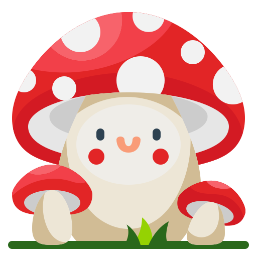

Panduan Budidaya Jamur Gourmet
Ikuti langkah-langkah mudah ini untuk mengubah ampas kopi menjadi jamur lezat di rumah!
Progres Belajar Anda
0 dari 3 langkah selesai.
Persiapan Ampas Kopi

Kumpulkan ampas kopi dari rumah atau kafe. Pastikan ampas kopi relatif segar dan tidak berjamur. Jemur atau keringkan sebentar untuk mengurangi kadar air, namun jangan sampai terlalu kering.
Sterilisasi Media & Pencampuran Bibit
Panaskan ampas kopi (kukus atau oven) untuk membunuh mikroorganisme. Setelah dingin, campurkan dengan bibit jamur (spawn) dalam wadah bersih.
Inokulasi & Perawatan Awal
Simpan media dalam tempat lembap dan tidak terkena sinar langsung. Tunggu miselium tumbuh (berwarna putih seperti kapas), lalu pindahkan ke ruang pertumbuhan.
Jaga Kelembaban, Bukan Basah
Gunakan semprotan kabut (sprayer) 1-2 kali sehari. Jangan menyiram langsung agar jamur tidak busuk.
Perhatikan Suhu & Sirkulasi
Suhu ideal berkisar 20-25°C. Ruangan harus teduh dan memiliki sirkulasi udara baik untuk mencegah jamur liar tumbuh.
Gunakan Sarung Tangan & Masker
Saat mencampur media dan spawn, gunakan alat pelindung untuk menjaga sterilitas dan kesehatan Anda.
Cegah Kontaminasi
Jika muncul jamur berwarna aneh (hijau, merah muda, hitam), segera pisahkan media tersebut agar tidak menyebar.